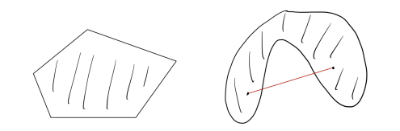
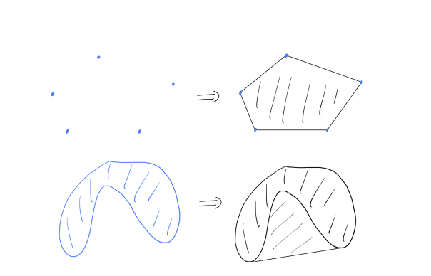
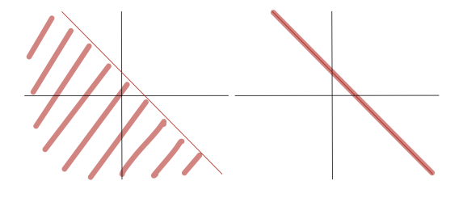
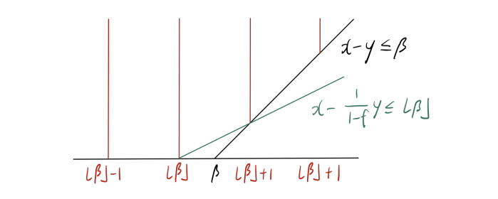
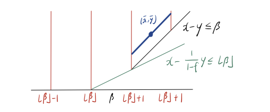
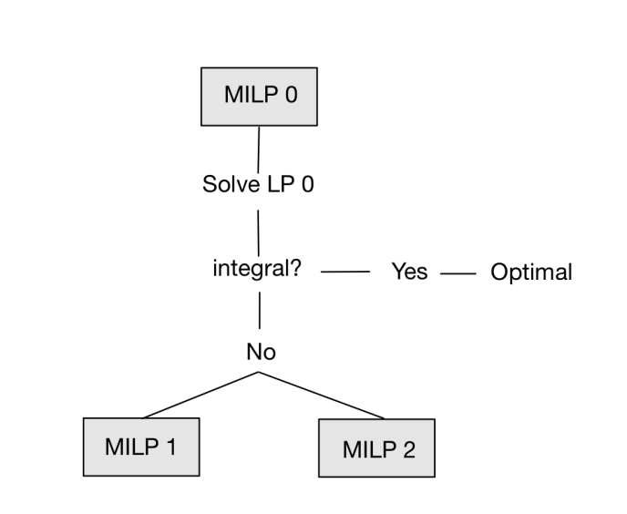

凸包和有效不等式#
Reference
1 凸包
对于集合 $ X :raw-latex:`\subseteq `:raw-latex:`mathbb{R}`^d
$，若对任意 $ u, v :raw-latex:`in `X $ 以及任意 $
:raw-latex:`\lambda `:raw-latex:`in [0, 1] `$，均有 $
:raw-latex:`\lambda `u + (1 - :raw-latex:`lambda`)v :raw-latex:`in `X
$，则称 $ X $ 是 凸的.
换句话说，连接集合内任意两点的线段完全包含于该集合.
下图展示了一个凸集和一个非凸集.

定义1.1 给定 $ v^1, :raw-latex:`\dots`, v^k
:raw-latex:`\in `:raw-latex:`mathbb{R}`^d $，若 $
:raw-latex:`\sum`_{i=1}^k :raw-latex:`\lambda`_i = 1 $ 且对 $ i = 1,
:raw-latex:`\dots`, k $ 有 $ :raw-latex:`\lambda`_i :raw-latex:`\geq 0`
$，则线性组合 $ :raw-latex:`\lambda`_1 v^1 + :raw-latex:`cdots `+
:raw-latex:`\lambda`_k v^k $ 称为 $ v^1, :raw-latex:`\dots`, v^k $ 的
凸组合.
定义1.2 两个不同点 $ u, v $ 的凸组合是连接它们的线段 $ {
:raw-latex:`\lambda `u + (1 - :raw-latex:`lambda`)v : 0
:raw-latex:`\leq `:raw-latex:`lambda :raw-latex:leq 1` } $.
$ 的 凸包，记为 $ :raw-latex:`text{conv}`(S) $，是 $ S $
中所有点的凸组合构成的集合. 根据定义：
\[\text{conv}(S) = \left\{ \sum_{i=1}^n \lambda_i v^i : n \in \mathbb{N},\, v^1, \dots, v^n \in S,\, \sum_{i=1}^n \lambda_i = 1,\, \lambda_1, \dots, \lambda_n \geq 0 \right\}.\]
定理1.4 凸包\(\text{conv}(S)\)是包含\(S\)的最小凸集.
无论 $ S $ 本身是否为凸集，$ :raw-latex:`text{conv}`(S) $ 始终是凸的.
下图展示了对（非凸）集合取凸包的若干示例.

\[ \begin{align}\begin{aligned}\begin{aligned}\\\begin{split}\max \quad & c^{\top}x + h^{\top}y \\\end{split}\\\begin{split}\text{s.t.} \quad & Ax + Gy \leq b, \\\end{split}\\& x \in \mathbb{Z}^d,\ y \in \mathbb{R}^p,\\\end{aligned} \quad (1.1)\end{aligned}\end{align} \]
\[\mathrm{conv}(S) = \mathrm{conv}\left( \left\{ (x, y) \in \mathbb{Z}^d \times \mathbb{R}^p : Ax + Gy \leq b \right\} \right).\]
\[\max\left\{ c^{\top}x + h^{\top}y : (x, y) \in S \right\} = \max\left\{ c^{\top}x + h^{\top}y : (x, y) \in \mathrm{conv}(S) \right\}.\]
S $ 上取得，当且仅当它在 $ :raw-latex:`mathrm{conv}`(S) $ 上取得.
\(，显然有：\)$ :raw-latex:`\max`:raw-latex:`left`{
c^{:raw-latex:`\top`}x + h^{:raw-latex:`\top`}y : (x, y)
:raw-latex:`\in `S :raw-latex:`right`}
:raw-latex:`\leq `:raw-latex:`max`:raw-latex:`left`{
c^{:raw-latex:`\top`}x + h^{:raw-latex:`\top`}y : (x, y)
:raw-latex:`\in `:raw-latex:`mathrm{conv}`(S) :raw-latex:`\right`}.
\[接下来证明：\]:raw-latex:`\max`:raw-latex:`\left`{ c^{:raw-latex:`top`}x +
h^{:raw-latex:`\top`}y : (x, y) :raw-latex:`in `S
:raw-latex:`\geq `:raw-latex:`max`:raw-latex:`left`{
c^{:raw-latex:`\top`}x + h^{:raw-latex:`\top`}y : (x, y)
:raw-latex:`\in `:raw-latex:`mathrm{conv}`(S) :raw-latex:`\right`}
\[成立. 令 $ z^{*} = \max\left\{ c^{\top}x + h^{\top}y : (x, y) \in S \right\} $，不妨设 $ z^{*} $ 有限. 考虑集合：\]H = :raw-latex:`left`{ (x, y)
:raw-latex:`\in `:raw-latex:`mathbb{R}`^d
:raw-latex:`\times `:raw-latex:`mathbb{R}`^p : c^{:raw-latex:`\top`}x
h^{:raw-latex:`\top`}y :raw-latex:`\leq `z^{*} :raw-latex:`right`}.
\[根据定义，$ S \subseteq H $. 此外，由于 $ H $ 是凸集，故 $ \mathrm{conv}(S) \subseteq H $. 这意味着：\]:raw-latex:`\max`:raw-latex:`\left`{ c^{:raw-latex:`top`}x +
h^{:raw-latex:`\top`}y : (x, y)
:raw-latex:`\in `:raw-latex:`mathrm{conv}`(S) :raw-latex:`\right`}
:raw-latex:`\leq `z^{*} = :raw-latex:`max`:raw-latex:`left`{
c^{:raw-latex:`\top`}x + h^{:raw-latex:`\top`}y : (x, y)
:raw-latex:`\in `S :raw-latex:`right`}, $$
\((\bar{x}, \bar{y}) \in S\) 处取得. 那么
\[\max \{c^\top x + h^\top y : (x, y) \in S\} = c^\top \bar{x} + h^\top \bar{y}.\]
\[\max \{c^\top x + h^\top y : (x, y) \in \text{conv}(S)\} = c^\top \bar{x} + h^\top \bar{y}.\]
\((\bar{x}, \bar{y}) \in \text{conv}(S)\) 处取得.
根据凸包的定义，该点可表示为 \(S\) 中 \(n\) 个点
\((x^1, y^1), \ldots, (x^n, y^n)\) 的凸组合. 由于这些点也属于
\(\text{conv}(S)\)，对所有 \(i\) 有
\(c^\top x^i + h^\top y^i \leq c^\top \bar{x} + h^\top \bar{y}\),
且
\[c^\top \bar{x} + h^\top \bar{y} = \sum_{i=1}^n \lambda_i (c^\top x^i + h^\top y^i)\]
\(\sum_{i \in [n]} \lambda_i = 1\). 于是，
\[c^\top \bar{x} + h^\top \bar{y} = \sum_{i=1}^n \lambda_i (c^\top x^i + h^\top y^i) \leq \sum_{i=1}^n \lambda_i (c^\top \bar{x} + h^\top \bar{y}) = c^\top \bar{x} + h^\top \bar{y},\]
\(i \in [n]\)，\(c^\top x^i + h^\top y^i = c^\top \bar{x} + h^\top \bar{y}.\quad \square\)
\(\text{conv}(S)\) 上优化. 由迈耶定理，存在有理线性不等式组
\(A'x + G'y \leq b'\)，使得
\[\text{conv}(S) = \{ (x, y) \in \mathbb{R}^d \times \mathbb{R}^p : A'x + G'y \leq b' \}.\]
等价于线性规划
\[\max \{c^\top x + h^\top y : A'x + G'y \leq b'\}\]
由此可见，整数规划可归结为线性规划. 但这与此前“整数规划是 NP
难，而线性规划不是”的讨论矛盾吗？答案是否定的.
原因是迈耶定理仅表明存在这样的线性系统，而实际计算\(\text{conv}(S)\)
难度极大.
2 有效不等式
:raw-latex:`\in `:raw-latex:`mathbb{R}`^{m :raw-latex:`times `n}
$，向量 $ b :raw-latex:`\in `:raw-latex:`mathbb{R}`^m \(、\) c
:raw-latex:`\in `:raw-latex:`mathbb{R}`^n $，以及子集 $ I
:raw-latex:`\subseteq `{1, :raw-latex:`dots`, n} $，混合整数线性规划
$ :raw-latex:`\text{MILP}` = (A, b, c, I) $ 定义为：
\[z^* = \min\{ c^T x \mid A x \leq b,\, x \in \mathbb{R}^n_+,\, x_j \in \mathbb{Z}_+,\, \forall j \in I \}\]
:raw-latex:`\in `:raw-latex:`mathbb{R}`^n :raw-latex:`mid `A x
:raw-latex:`\in `:raw-latex:`mathbb{R}`^n_+,, x_j
:raw-latex:`\in `:raw-latex:`mathbb{Z}`,, :raw-latex:`forall `j
:raw-latex:`in `I } $ 中的向量称为 MILP 的 可行解。若 MILP
的可行解 $ x^* :raw-latex:`\in `X\_{:raw-latex:`text{MILP}`} $
满足目标函数值 $ c^T x^* = z^* $，则称 $ x^* $ 为 最优解。
\[\tilde{z} = \min\{ c^T x \mid A x \leq b,\, x \in \mathbb{R}^n \}\]
\[S = \{ (x, y) \in \mathbb{Z} \times \mathbb{R}_+ : x - y \leq \beta \} \quad (2.1)\]
\[P = \{ (x, y) \in \mathbb{R} \times \mathbb{R}_+ : x - y \leq \beta \}\]
下图展示了混合整数线性集合\(S\)(红线部分)及其松弛\(P\).

下面我们刻画\(S\)的凸包.
\[C \subseteq \{ x \in \mathbb{R}^d : a^\top x \leq b \}.\]
这里，集合
\[\{ x \in \mathbb{R}^d : a^\top x \leq b \}\]
\[\{ x \in \mathbb{R}^d : a^\top x = b \}\]

令\(f = \beta - \lfloor \beta \rfloor\)为\(\beta\)的小数部分.
那么，对于任意\((x, y) \in S\)，不等式
\[x - \frac{1}{1 - f}y \leq \lfloor \beta \rfloor \quad (2.2)\]
换句话说，该不等式对\(S\)有效且是\(S\)的有效不等式.
\(x \leq \lfloor \beta \rfloor\) 或
\(x \geq \lfloor \beta \rfloor + 1\). 若
\(x \leq \lfloor \beta \rfloor\)，由于
\(y \geq 0\)，则(2.2)成立. 若
\(x \geq \lfloor \beta \rfloor + 1\)，则对某个整数
\(k \geq 1\)，有 \(x = \lfloor \beta \rfloor + k\). 由
\(x - y \leq \beta\) 可得 \(y \geq k - f\)，此时：
\[x - \frac{1}{1 - f}y \leq \lfloor \beta \rfloor + k - \frac{k - f}{1 - f} = \lfloor \beta \rfloor - \frac{(k - 1)f}{1 - f} \leq \lfloor \beta \rfloor. \quad\square\]
引理 2.1 中的不等式 (2.1) 在
\((x, y) = (\lfloor \beta \rfloor, 0)\)、\((\lfloor \beta \rfloor + 1, 1 - f)\)
时取等号. 换句话说，由
\(x - \frac{1}{1 - f}y = \lfloor \beta \rfloor\) 定义的直线经过点
\((\lfloor \beta \rfloor, 0)\) 和
\((\lfloor \beta \rfloor + 1, 1 - f)\)，如下图所示：

我们之后会看到，由内姆豪泽和沃尔西 [NW90] 提出的
混合整数舍入（MIR）割平面，正是基于对混合整数线性集合 (2.1)
的有效不等式 (2.2) 得到的.
事实上，不等式 (2.2) 连同 \(y \geq 0\) 和 \(x - y \leq \beta\)
描述了混合整数线性集合 (2.1) 的凸包.
\(S = \{ (x, y) \in \mathbb{Z} \times \mathbb{R}_+ : x - y \leq \beta \}\)，则
\[\operatorname{conv}(S) = \left\{ (x, y) \in \mathbb{R} \times \mathbb{R}_+ : x - y \leq \beta,\, x - \frac{1}{1 - f}y \leq \lfloor \beta \rfloor \right\}.\]
\(S\) 有效，则也对\(\text{conv}(S)\)有效, 进而
\(\operatorname{conv}(S) \subseteq Q\).
\(Q\) 中任意点 \((\bar{x}, \bar{y})\) 可表示为 \(S\)
中某两点的凸组合. 若 \(\bar{x} \in \mathbb{Z}\)，则
\((\bar{x}, \bar{y}) \in S \subseteq \operatorname{conv}(S)\).
因此，可假设 \(\bar{x} \notin \mathbb{Z}\).
注意以下三种情况必居其一：(1)
\(\bar{x} < \lfloor \beta \rfloor\)，(2)
\(\lfloor \beta \rfloor < \bar{x} < \lfloor \beta \rfloor + 1\)，(3)
\(\bar{x} \geq \lfloor \beta \rfloor + 1\).
此时 \(\lfloor \bar{x} \rfloor\) 和 \(\lceil \bar{x} \rceil\)
均小于或等于 \(\lfloor \beta \rfloor\)，故
\((\lfloor \bar{x} \rfloor, \bar{y})\) 和
\((\lceil \bar{x} \rceil, \bar{y})\) 属于 \(S\).
此处，\((\bar{x}, \bar{y})\) 是
\((\lfloor \bar{x} \rfloor, \bar{y})\) 与
\((\lceil \bar{x} \rceil, \bar{y})\) 的凸组合.

其次，考虑
\(\lfloor \beta \rfloor < \bar{x} < \lfloor \beta \rfloor + 1\)
的情形，如下图所示，画一条经过 \((\bar{x}, \bar{y})\) 且与直线
\(x - \frac{1}{1 - f}y = \lfloor \beta \rfloor\) 平行的线段.
该线段与 \(x = \lfloor \beta \rfloor\) 和
\(x = \lfloor \beta \rfloor + 1\) 相交，交点属于 \(S\)，且
\(\bar{x}\) 是它们的凸组合.

最后，考虑 \(\lfloor \beta \rfloor + 1 < \bar{x}\)
的情形，如下图所示, 画一条经过 \((\bar{x}, \bar{y})\) 且与直线
\(x - y = \beta\) 平行的线段. 该线段与
\(x = \lfloor \bar{x} \rfloor\) 和 \(x = \lceil \bar{x} \rceil\)
相交，交点属于 \(S\)，且 \(\bar{x}\) 是它们的凸组合.

可以从 [Michele Conforti, G´erard Cornu´ejols, and Giacomo Zambelli.
Integer Programming. Springer, 2014., 命题 1.5] 中找到命题 2.2
的代数证明.
可见:math:`text{conv}(S)subseteq P`.
3 整数规划的求解方法
让我们讨论这些方法背后的概要与思想. 再次考虑混合整数线性规划
\[z^* = \max \{ c^\top x + h^\top y : (x, y) \in S \} \quad (\text{MILP}_0)\]
\[S = \{ (x, y) \in \mathbb{Z}^d \times \mathbb{R}^p : Ax + Gy \leq b \}.\]
\[z_0 = \max \{ c^\top x + h^\top y : (x, y) \in P_0 \} \quad (\text{LP}_0)\]
\[P_0 = \{ (x, y) \in \mathbb{R}^d \times \mathbb{R}^p : Ax + Gy \leq b \}.\]
\(z_0\) 有限意味着最优值\(z^*\)也是有限的. 设
\((x^0, y^0)\) 是线性规划松弛的一个最优解. 如果
\(x^0 \in \mathbb{Z}^d\)，那么 \((x^0, y^0) \in S\).
这意味着
\[ \begin{align}\begin{aligned}\begin{align*}\\\begin{split}\max \{ c^\top x + h^\top y : (x, y) \in S \} &\leq \max \{ c^\top x + h^\top y : (x, y) \in P_0 \} \\\end{split}\\\begin{split}&= c^\top x^0 + h^\top y^0 \\\end{split}\\&\leq \max \{ c^\top x + h^\top y : (x, y) \in S \}.\\\end{align*}\end{aligned}\end{align} \]
是整数规划的最优解！
可能有一些分数分量. 这里，分支定界法和割平面法提供了两种处理
\(x^0\) 有分数分量情况的策略.
3.1 分支定界法
\[x_j \geq \lceil x^0_j \rceil \quad \text{或} \quad x_j \leq \lfloor x^0_j \rfloor.\]
\[S_1 = S \cap \{ (x, y) : x_j \geq \lceil x^0_j \rceil \} \quad \text{且} \quad S_2 = S \cap \{ (x, y) : x_j \leq \lfloor x^0_j \rfloor \},\]
\[ \begin{align}\begin{aligned}\begin{align*}\\\begin{split}\max\ & \{ c^\top x + h^\top y : (x, y) \in S_1 \}, \quad (\text{MILP}_1) \\\end{split}\\\max\ & \{ c^\top x + h^\top y : (x, y) \in S_2 \}. \quad (\text{MILP}_2)\\\end{align*}\end{aligned}\end{align} \]
的最大值将是原始整数规划 \((\text{MILP}_0)\) 的最优值.
\((\text{MILP}_1)\) 和 \((\text{MILP}_2)\).
我们可以将此表示为一棵树结构，下图所示

\((\text{MILP}_2)\)，我们求解它们的线性规划松弛
\[ \begin{align}\begin{aligned}\begin{align*}\\\begin{split}\max\ & \{ c^\top x + h^\top y : (x, y) \in P_1 \}, \quad (\text{LP}_1) \\\end{split}\\\max\ & \{ c^\top x + h^\top y : (x, y) \in P_2 \}, \quad (\text{LP}_2)\\\end{align*}\end{aligned}\end{align} \]
\[P_1 = P_0 \cap \{ (x, y) : x_j \geq \lceil x^0_j \rceil \} \quad \text{且} \quad P_2 = P_0 \cap \{ (x, y) : x_j \leq \lfloor x^0_j \rfloor \}.\]
若\((\text{LP}_1)\)不可行，则意味着\((\text{MILP}_1)\)不可行.
那么我们可将其从搜索树中移除（通过不可行性剪枝）.
若\((\text{LP}_1)\)返回整数解，则意味着\((\text{MILP}_1)\)已求解.
然后我们保留该整数解，但将\((\text{MILP}_1)\)从搜索树中移除（通过整数性剪枝）.
若\((\text{LP}_1)\)返回分数解，且\((\text{LP}_1)\)的值小于或等于当前最佳整数解的值（可能通过求解\((\text{MILP}_2)\)得到），则我们从搜索树中移除\((\text{MILP}_1)\)（通过值剪枝）.
若\((\text{LP}_1)\)返回分数解，且\((\text{LP}_1)\)的值大于当前最佳整数解的值，那么我们对分数分量应用分支过程.
我们对\((\text{MILP}_2)\)应用相同规则，并对树中剩余的其他子问题重复该过程.
此过程生成的树称为分支定界树.
3.2 割平面法
回忆二维混合整数线性集合的例子. 不等式 (2.2)
对混合整数集有效，且(2.2)将\((\beta,0)\)与混合整数集分离.
因此，如果我们取满足 (2.2) 的解集，\((\beta,0)\)就被移出解集.
这里，我们称这样的不等式为割平面，它将点与混合整数集分离.
从这个意义上说，(2.2) 是一个割平面.
\((x^0, y^0)\)，并找到一个割平面，将 \((x^0, y^0)\) 与
\(S\) 分离. 这里，形如
\(\alpha^\top x + \gamma^\top y \leq \beta\)
的不等式是一个割平面，满足：
\[\alpha^\top x + \gamma^\top y \leq \beta \quad \forall (x, y) \in S \quad \text{且} \quad \alpha^\top x^0 + \gamma^\top y^0 > \beta.\]
\[\max \{ c^\top x + h^\top y : (x, y) \in P_1 \}\]
\[P_1 = P_0 \cap \{ (x, y) : \alpha^\top x + \gamma^\top y \leq \beta \}.\]
\(P_0 = \{ (x, y) \in \mathbb{R}^d \times \mathbb{R}^p : Ax + Gy \leq b \}\)
为线性规划松弛 \((\text{LP}_0)\) 的解集.
的最优解 \((x^t, y^t)\).
即为最优整数解.
\(\alpha^\top x + \gamma^\top y \leq \beta\) 将 \((x^t, y^t)\)
分离，然后设置
\[P_{t+1} = P_t \cap \{ (x, y) : \alpha^\top x + \gamma^\top y \leq \beta \}\]
3.3 分支切割法
分支切割法本质上是将分支定界法与割平面算法相结合.
在运行分支定界过程时，我们可以找到并应用割平面，分离通过求解子问题得到的分数解.
CPLEX和Gurobi等先进的整数规划软件都实现了分支切割法.
它们应用一些专门设计的分支规则和割平面生成策略.
在这种情况下，我们可以使用CPLEX和Gurobi中的（割平面）回调功能来应用用户定义的割平面.
基本上，回调功能会在分支定界树中的某个节点调用并应用用户定义的割平面.
PORTA，官网为https://porta.zib.de.
输入有限向量集时，可计算凸包；输入线性不等式组时，可计算”极点（extreme
points）“和”极射线（extreme rays）“.